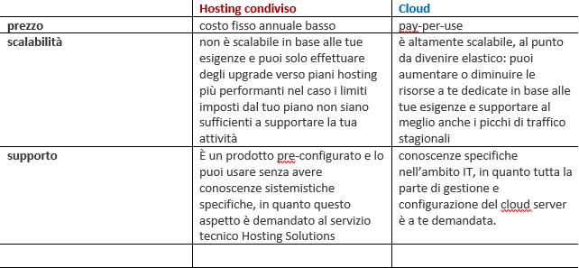

L’Hosting è un servizio di rete che prevede di ospitare uno o più siti identificati attraverso dominio e
indirizzo IP, all’ interno di un server di proprietà dell’Hosting Provider.
L’Hosting si può dividere in due categorie:
• L’Hosting dedicato prevede l’affitto di una intera singola macchina di proprietà del Provider ad un
unico cliente che può utilizzarla per uno o più siti in suo possesso. In questo caso il cliente non
dovrà condividere con nessun’altro le risorse della macchina che lo ospita.
• L’Hosting condiviso prevede la locazione di uno o più siti all’ interno di un server di proprietà del
Provider che ospita anche siti di altri clienti. Si tratta di affittare una porzione di spazio del disco di
una singola macchina condividendone con gli altri affittuari le risorse. Il frazionamento delle risorse
del sistema, in questo tipo di servizio, è piuttosto "rudimentale" in quanto il fatto che molteplici siti
web condividano lo stesso server implica una certa reciproca ingerenza, col rischio che problemi di
un singolo sito web possano riflettersi negativamente anche su tutti gli altri ospiti del sistema.
PRO
• Costi contenuti
• Non sono richieste competenze sistemistiche
• Estrema facilità di utilizzo
CONTRO
• Scarsa affidabilità
• Prestazioni non garantite
• Limitatissime possibilità di personalizzazione
• Inadatto per siti che sviluppano molto traffico e/o richiedono grandi risorse di calcolo
Differenze Hosting e Cloud

Un ultimo aspetto che va valutato è quello che riguarda la sicurezza: se con l’hosting
tradizionale il rischio di downtime, pur non essendo frequente, è concreto, con il server cloud
questo pericolo è praticamente assente. Anche la sicurezza dei dati è protetta e tutelata: in caso
di guasti o di inconvenienti di qualsiasi genere, è più probabile un danneggiamento dei dati di un
hosting che non un danneggiamento dei dati di un server cloud.
* Downtime: Periodo di momentanea indisponibilità, dovuto a guasto o manutenzione, di un apparecchio informatico e/o dei servizi da esso erogati.
Gli hosting si possono dividere in hosting gratuiti, a pagamento e infrastrutturali.
Hosting Gratuito
È in genere offerto dagli Internet Service Provider (ISP), come servizio elementare, in previsione di un passaggio a quello a pagamento. Essendo gratis ha delle funzionalità estremamente basilari, oltre che inadatte a sostenere un flusso di visitatori consistente.
Un hosting gratuito include solitamente:
• una o più caselle di posta elettronica
• un certo quantitativo di spazio web, spesso con l'obbligo di banner pubblicitario
• un database
• un pannello di gestione dei servizi, tipo cPanel(pannello di controllo grafico per la gestione dei siti internet)
Tra gli svantaggi dell'hosting gratuito, rispetto a quello a pagamento, vi sono:
• l'indirizzo del sito ospitato che coincide, in massima parte, con il nome dell'Internet Provider che lo ospita
• prestazioni tecniche poco performanti (molto spesso, per esempio, è possibile pubblicare soltanto siti statici scritti in linguaggio HTML)
• mancata garanzia del servizio (con il rischio quindi che i siti "ospiti" possano non essere attivi per un determinato periodo di tempo)
• una larghezza di banda contesa tra numerosi utenti
Hosting a pagamento
Un servizio hosting di livello superiore, adatto ad un sito dinamico, oltre a ciò offre molto di più.
Insieme a servizi richiedibili all’occorrenza al proprio host, avrete ad esempio:
• il supporto ad uno o più linguaggi di scripting lato server: PHP 4/5, Python, ASP
• il supporto ad un database
• servizi di statistiche e analisi del traffico
La differenza, quindi, sta nel livello di professionalità del tuo sito: sia per ciò che visualizzano gli utenti, sia per gli strumenti a tua disposizione. Non sempre, quindi, risparmiare può essere un vantaggio: talvolta può funzionare meglio affidarsi ad un servizio più articolato ed efficiente.
Hosting infrastrutturale
Chiamato anche host network, consiste in un intera infrastruttura hardware e software messa a disposizione, configurata in base alle esigenze del cliente. tali infrastrutture sono tipicamente server virtuali ma in base alle proprie esigenze e possibile avere in esclusiva intere macchine pagando semplicemente il relativo canone.
Vi possono essere due scenari:
• l'infrastruttura in hosting è solo una parte di quella complessiva che è quindi formata anche da risorse fisiche installate presso la sede del cliente; naturalmente quella in hosting è connessa, in una logica di rete integrata, a quella installata che, normalmente, supporta il Primary Domain Controller
• l'intera e unica infrastruttura formata da server, storage, switch, firewall, ecc. è acquisita come servizio in hosting, pertanto il cliente deve unicamente interfacciarsi (attraverso un router e, se necessario, uno switch o anche un hub-nei casi minimali-installati in sede) con i client, spesso ridotti a semplici terminali. Ovviamente, i sistemi operativi lato server e gli applicativi di rete sono installati sull'infrastruttura in hosting, e anch'essi sono forniti come servizi